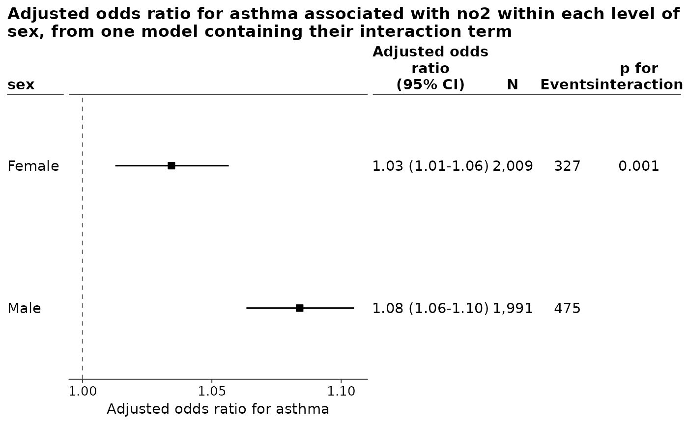
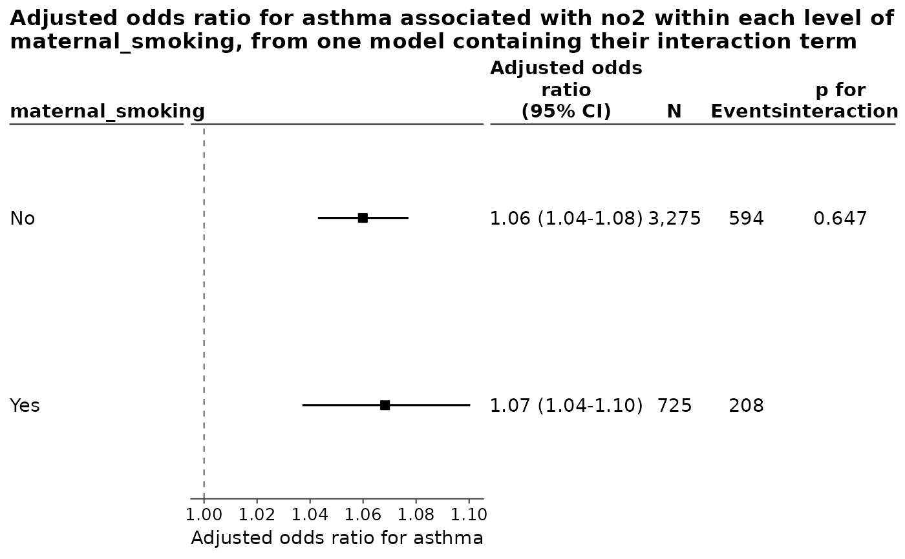
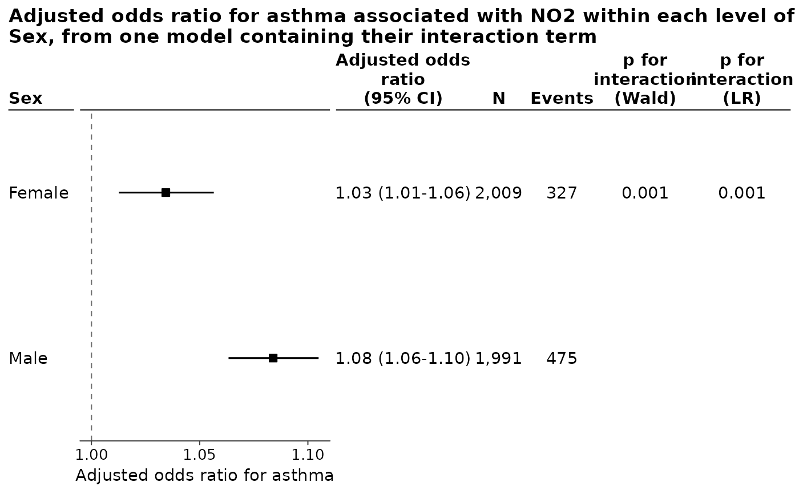
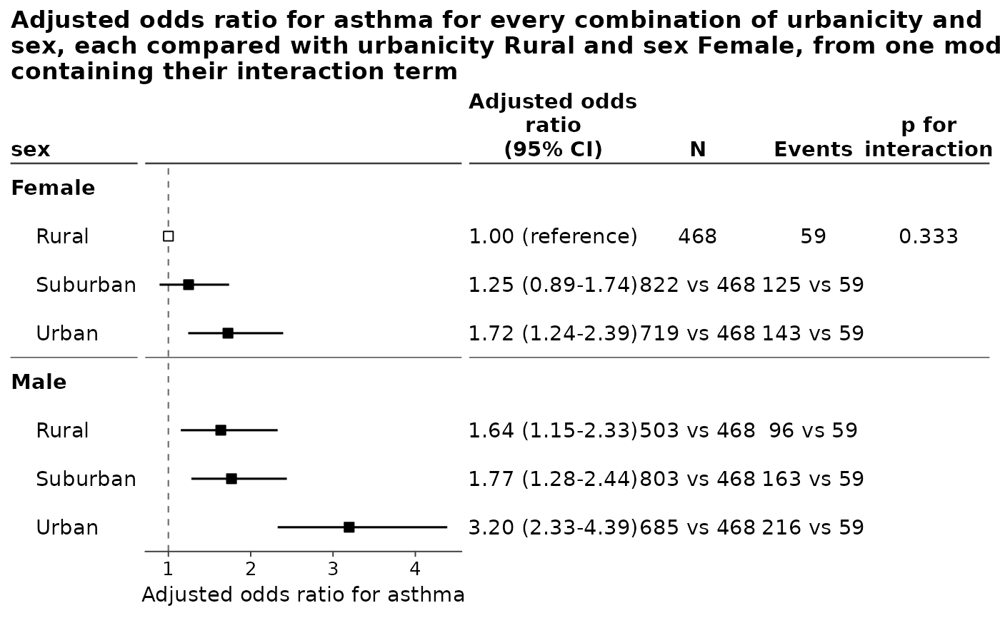
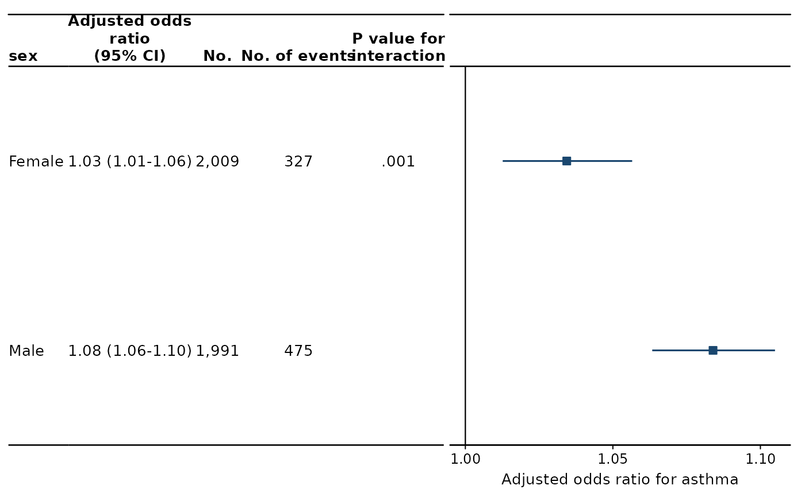

Exposure effect within each level of an effect modifier
Source:R/foresty_interaction.R
foresty_interaction.RdTakes a model that does not yet interact the exposure with the modifier, updates it with the interaction term, and estimates the exposure effect separately within every level of the modifier. The estimates are drawn one level above the other, a row to a level, and can be written to a self-contained HTML page carrying the joint test of the interaction.
Usage
foresty_interaction(
fit,
exposure,
interaction,
measure = NULL,
exponentiate = TRUE,
labels = NULL,
level_labels = NULL,
reference = NULL,
outcome = NULL,
ci_level = 0.95,
contrast = NULL,
at = NULL,
vcov = NULL,
cluster = NULL,
test = c("lrt", "wald", "both"),
table = TRUE,
columns = NULL,
person_time = NULL,
layout = NULL,
title = NULL,
subtitle = NULL,
xlab = NULL,
html = FALSE
)Arguments
- fit
A fitted model. If it already contains the exposure by modifier interaction it is used as it stands; otherwise it is updated to add it.
- exposure
Name of the exposure variable, as a character string. Naming it, as
exposure = c(NO2 = "no2"), gives it that label on the figure, which saves repeating it inlabels.- interaction
Name of the effect modifier, as a character string, and named as
interaction = c(Sex = "sex")where the figure is to call it something other than what the column is called. It must have at least two levels. A numeric column taking exactly two values counts as having them, so a flag coded 0 and 1 is read as those two subgroups without being wrapped infactor()and fitted again: it entered the model through the one coefficient a two-level factor would have given, and the estimates and the test are the same either way. Its rows are labelled with the values themselves,0and1, which is rarely what a figure should say, so name them throughlevel_labels. A modifier taking three or more numeric values is rejected: categorize it withcut()and refit, so that the subgroups being compared are the ones you intend and the test has the degrees of freedom the figure implies.- measure
Effect measure, one of
"OR","RR","HR","IRR","MD"or"Coefficient". The default reads it from the model: a logistic regression gives an odds ratio, a Cox model a hazard ratio, a Poisson model with an offset an incidence rate ratio, and a linear model a mean difference. Ratios are exponentiated; differences are not.- exponentiate
Whether a ratio measure is drawn as a ratio.
TRUE, the default, draws an odds ratio as an odds ratio.FALSEleaves it on the scale the model was fitted on: the figure reports a log odds ratio, read against zero rather than against one, and the estimates and their intervals come back on that scale fromtidy()as well. It says nothing about a mean difference or a coefficient, which are on that scale already and are never exponentiated.- labels
Named character vector giving the label to draw for a variable, as
c(no2 = "Nitrogen dioxide"). Names not matched are left as they are. This is where the exposure is renamed, and naming it where it is chosen –exposure = c(NO2 = "no2")– comes to the same thing.- level_labels
Named character vector giving the label to draw for a level of the modifier, as
c(F = "Female", M = "Male"), orc("0" = "No", "1" = "Yes")for a modifier coded as a flag.- reference
The one combination of the exposure and the modifier every row is compared with, as a named character vector naming a level of each:
reference = c(ecog = "0-1", egfr = "Negative").TRUEtakes the first level of each.NULL, the default, compares nothing across subgroups: each row is the effect of the exposure inside its own subgroup. Both variables must be categorical for a combination of them to be a group at all. See One reference group for the whole figure.- outcome
What to call the outcome, as
outcome = "incident asthma". The default takes it from the left of the model's formula, which is the name of a column –asthma_ever_dx,evt5– and is rarely what a figure should say the effect is an effect on. It is written wherever the outcome is named: the axis under the plot, the title the package writes for itself, and the HTML report.NAnames none, leaving "Adjusted odds ratio" on its own for a figure whose caption says what of.- ci_level
Confidence level of the intervals. Defaults to
0.95.- contrast
For a continuous exposure, the increment the effect is reported per.
NULL, the default, is one unit and is not written on the figure. An increment you name is:contrast = 10draws the row as"NO2 (per 10)"andcontrast = 1draws it as"NO2 (per 1)", the same estimate as the default said out loud. No unit is invented, since the package cannot know what a column's numbers mean; name the unit inlabels, asc(no2 = "NO2, ug/m3"), and the row reads"NO2, ug/m3 (per 10)".contrast = "iqr"takes the increment from the data instead: the interquartile range of the exposure as the model saw it, which is what an exposure with no natural unit is usually reported per. The range it came to is written beside the variable, as"NO2 (per IQR, 8.44)", because an effect per interquartile range cannot be compared with anything unless the figure says which range that was.contrastsays nothing about a categorical exposure, whose comparisons are its levels.- at
The two values of the exposure to contrast, as
c(from, to). Which two they were is written beside the exposure, as"NO2 (10 -> 20)", wherever the exposure is named: every row of a figure is that same comparison taken within another subgroup, so it is said once rather than on each of them. An exposure entered as a spline, or in any other way that spreads it over more than one coefficient, has no single effect to report and is drawn only whenatnames the two values; any other exposure may be given them too,atandcontrastbeing two ways of saying the same thing and only one of them accepted at a time. For a categorical exposure the two values are two of its levels.- vcov
Robust standard errors.
NULL, the default, uses the model's own."robust"gives the heteroskedasticity-consistent sandwich estimator (HC1), and"HC0"to"HC4"name one exactly; both come from thesandwichpackage. A function is called on the fit, and a matrix is used as it stands. For a Cox model refit withrobust = TRUE; a fit that is already robust is used as it is.- cluster
Cluster-robust standard errors, passed to
sandwich::vcovCL(). It says which observations belong together, so it takes a column name, a vector of one identifier per observation, or a one-sided formula:cluster = "practice_id",cluster = data$practice_idorcluster = ~practice_id.- test
How the interaction is tested:
"lrt", the default, is the likelihood ratio test against the same model without the interaction terms;"wald"is the joint Wald test of those terms;"both"reports the two of them in columns of their own. See Testing the interaction.- table
Whether to draw the table of numbers beside the plot. Defaults to
TRUE, a forest plot being read from the numbers as much as from the marks;table = FALSEleaves a plain figure, andsummary()andtidy()report the same numbers at the console either way.- columns
Which columns the table carries, from
"estimate","p","n","events","person_time","interaction_p"and, where both tests of an interaction were asked for,"interaction_p_lrt". The default shows the estimate and the p-value together with whichever of the others the models can supply. On a figure reporting a test of an interaction the p-value of each row is left off, being easily read as the test beside it; name it incolumnsto have it back.- person_time
The unit person-time is reported in, for a model that carries any.
NULL, the default, reports the total the model was fitted over. A number divides by it, soperson_time = 1000draws a column of thousands of person-years and heads it"Person-time (per 1,000)", since a count of person-time that does not say what it counts cannot be read against another study's. Naming the number heads the column outright, asperson_time = c("Person-years (per 1,000)" = 1000). The unit reaches the figure,summary()and the HTML report alike. It does not refit the model or change its estimates, confidence intervals, or p-values:person_timecontrols only how the person-time column is written.- layout
How the figure is drawn: the name of a style, as
layout = "jama", or a layout built byforesty_layout()when something about it has to be changed. The styles are"classic","jama","nejm","lancet","bmj"and"revman".- title
Plot title. The default names the measure, the outcome it is a measure of, the exposure, the modifier and the fact that every subgroup estimate comes out of one model carrying their interaction term, as
"Adjusted odds ratio for asthma associated with NO2 within each level of Sex, from one model containing their interaction term".NAdraws none, and the journal styles draw none, a caption being where a journal puts that.- subtitle
Plot subtitle.
NULL, the default, draws none.- xlab
The label under the plot, which by default names the measure and the outcome, as
"Adjusted odds ratio for asthma". A string is drawn as it was given –xlab = "Odds ratio (95% CI), NO2 per 10 ug/m3"– andNAdraws none. Renaming only the outcome is whatoutcomeis for; this replaces the whole line.- html
Whether to write the HTML report.
FALSE, the default, writes nothing, so nothing leaves the session unless it is asked for.TRUEwrites it to a file named for the variables it is about, the exposure and the modifier joined by an underscore, so that NO2 by sex is written tono2_sex.htmlin the working directory. A path writes it there instead, ashtml = "reports/no2_sex.html". The report can also be written at any time afterwards withforesty_report().
Value
A ggplot2 object, of class foresty, carrying the estimates and
the interaction test. Print it to draw it. summary() reports the
coefficients and the test, and tidy() returns the estimates as a data
frame.
Details
The point is to make an interaction readable. The p-value of an interaction term reports only that the subgroups depart from a common effect; it does not say which subgroup carries the effect, in which direction, or how far apart they are, and a small p-value from a large study can accompany subgroup estimates that are practically identical. Seeing the subgroup-specific estimates and the test together is what settles whether an interaction is worth reporting.
Each subgroup effect is a linear combination of the coefficients of the
single interaction model, not a separate model fitted in each subgroup: in
the reference level of the modifier it is the exposure term alone, and in
the other levels it is the exposure term plus the relevant interaction
terms. Every subgroup therefore shares one estimate of the covariate
effects, and the interaction can be tested. The combinations and their
tests are computed by car::linearHypothesis().
One reference group for the whole figure
By default every row is the effect of the exposure inside one subgroup, so
each subgroup is read against its own reference level and the rows of one
subgroup are not comparisons with the rows of another. Where the exposure and
the modifier are both categorical there is a second question a figure can
answer: what every combination of the two comes to against one of them.
reference asks it. reference = c(ecog = "0-1", egfr = "Negative") names
the one combination the rest are compared with, and each row is then that
whole cell – this level of the exposure and this level of the modifier –
against that cell, all of it out of the same interaction model. The cell
named carries no estimate of its own and is drawn as the reference it is.
The two figures answer different questions and the difference is worth being
clear about. Without reference, a row says how much the exposure matters in
that subgroup, and the interaction test beside the rows says whether those
effects differ. With it, a row says how far that combination of the two
variables is from one chosen combination, which is what a table of six groups
against one baseline group reports, and the interaction test beside them is
the same test of the same coefficients: it still asks whether the effect of
the exposure depends on the modifier, and it is not a test of the rows.
reference = TRUE takes the first level of each, which is the cell a model
takes as its own baseline.
Testing the interaction
The p-value beside the subgroups is the joint test that every exposure by modifier coefficient is zero. It is the likelihood ratio test by default, comparing the likelihood of the model carrying the interaction with that of the same model without it.
test = "wald" takes the joint Wald test over the coefficients and their
covariance instead, which is what a model summary reports and what a robust
or cluster-robust variance changes. The two tests answer the same question
and usually agree; they part company where the Wald approximation is poor –
a small study, a rare outcome, a sparse subgroup, an estimate far from the
null – and the likelihood ratio test is the more trustworthy of the two
there, which is why it is the default. test = "both" reports each in a
column of its own, which is a way of showing that the reported p-value does
not turn on which test was chosen.
The likelihood ratio test is computed from the likelihood, so it has no
robust form: it takes no account of a variance passed through vcov or
cluster. Where it would not match the intervals drawn beside it for that
reason, the Wald test is reported in its place and foresty says so; ask for
the likelihood ratio test by name there and it is given, with a warning that
it does not match them.
A model with no likelihood at all is a different case, and no likelihood
ratio test is reported for one however it is asked for. A GEE is the one that
comes up: it estimates its coefficients from estimating equations rather than
from a likelihood, and its standard errors are the sandwich ones from the
start, so the joint Wald test is the test of it. A quasi-likelihood family is
the same case. test = "lrt" on either is an error naming the reason rather
than a number that would look like a likelihood ratio test and not be one;
the default and test = "both" report the Wald test and say that they did.
For a linear model the likelihood ratio test is the chi-square form rather than the exact F test, which is what the Wald test gives there.
Adjusting the figure
The result is a ggplot2 object, so layers, scales and themes are added to
it as usual, and + always reaches the forest:
foresty_main(list(fit), "no2") + ggplot2::coord_cartesian(xlim = c(0.8, 2))
foresty_main(list(fit), "no2") + ggplot2::theme_minimal(base_size = 14)& reaches every panel of a figure that has more than one, which is worth
knowing about but rarely what you want: a scale or a coordinate system
applied to the table of numbers beside the plot will spoil it. Use +.
Examples
fit <- glm(asthma ~ no2 + sex + maternal_smoking + maternal_age,
family = binomial, data = foresty_cohort)
# Sex, where the interaction is real.
by_sex <- foresty_interaction(fit, exposure = "no2", interaction = "sex")
by_sex

summary(by_sex)
#>
#> Call:
#> glm(formula = asthma ~ no2 + sex + maternal_smoking + maternal_age +
#> no2:sex, family = binomial, data = foresty_cohort)
#>
#> Model: glm, lm
#> Measure: Odds ratio for asthma
#> Observations: 4,000 Events: 802
#>
#> Coefficients:
#> Estimate Std. Error z value Pr(>|z|)
#> (Intercept) -2.403e+00 3.124e-01 -7.693 1.43e-14
#> no2 3.379e-02 1.082e-02 3.123 0.00179
#> sexMale -4.358e-01 2.977e-01 -1.464 0.14322
#> maternal_smokingYes 5.994e-01 9.561e-02 6.269 3.64e-10
#> maternal_age -4.047e-05 7.562e-03 -0.005 0.99573
#> no2:sexMale 4.682e-02 1.459e-02 3.208 0.00134
#>
#> Odds ratio for asthma (95% CI):
#> Subgroup Variable OR 95% CI p N Events
#> Female no2 1.03 1.01-1.06 0.002 2,009 327
#> Male no2 1.08 1.06-1.10 <0.001 1,991 475
#>
#> Interaction (no2 by sex):
#> Likelihood ratio chi-square = 10.31 on 1 df, p = 0.001
# Maternal smoking, where it is not.
foresty_interaction(fit, exposure = "no2", interaction = "maternal_smoking")

# Naming the modifier labels it, and both tests of the interaction can be
# reported side by side.
foresty_interaction(fit, exposure = c(NO2 = "no2"),
interaction = c(Sex = "sex"), test = "both")

# Every combination of two categorical variables against one of them, which
# is the other question a two-way table of groups asks.
fit2 <- glm(asthma ~ urbanicity + sex + maternal_age, family = binomial,
data = foresty_cohort)
foresty_interaction(fit2, exposure = "urbanicity", interaction = "sex",
reference = c(urbanicity = "Rural", sex = "Female"))

# The subgroup estimates, the numbers behind them and the test of the
# interaction, in the layout of a journal.
foresty_interaction(fit, exposure = "no2", interaction = "sex",
layout = "jama")
